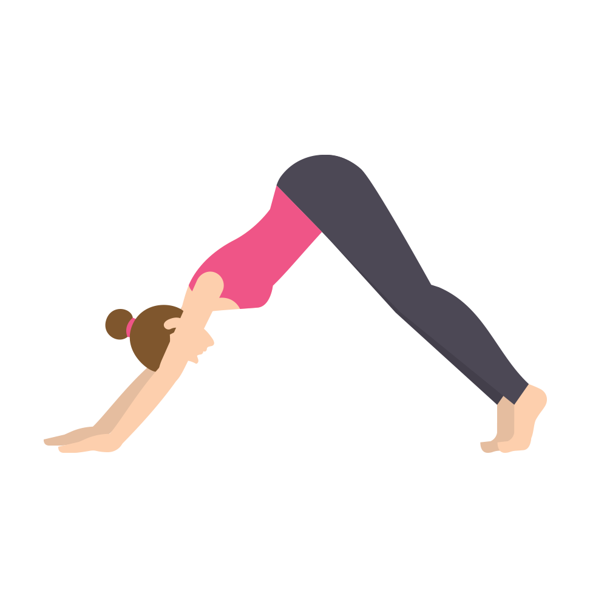

Downward Dog – Adho Mukha Svanasana

The Downward Dog yoga pose lengthens and decompresses the spine, stretches the hamstrings, strengthens your arms, flushes your brain with fresh oxygen and calms your mind.